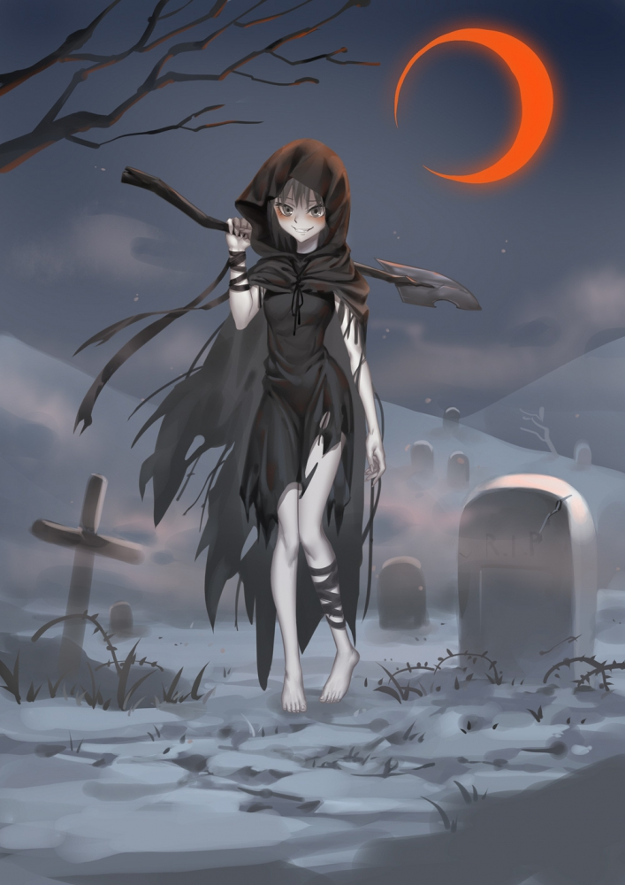

第一百一十六章 纯洁真理（2）
作为一处隐藏在农场下方的秘密房间，这个集会所的空间大得超乎想象，四面的墙壁几乎是无限的延伸出去，一眼看不到尽头，邪教正式信徒和那些拖家带口的傍依者数量足够把地上农场的空地都给填满，在下面却一点都感觉不到拥挤，甚至都没有呼吸不畅的现象，也许是幻术的作用，或者自然系施术者的魔法。
“大人！”一位白发苍苍的老嬷嬷双膝跪倒在白袍祭司身前，神色凄然：“求您帮帮我的儿子吧，全家人的生计都在他身上，只剩下一只手可要怎么活啊？”
皮肤黝黑的中年男人沉默地侍立在老人身侧，垂头不语，他体格健硕，肌肉发达，显然长年累月从事体力活，但此时右手袖管却空空荡荡。
“你们没有找过本地的‘正牌’教会求助吗？”邪教祭司漫不经心地把玩着一块碎钻，脸上似笑非笑道，他阴柔的长相、保养良好的双手和皮肤、一尘不染的丝质长袍以及精心打理的长发，恰好与面前的敦厚男人形成鲜明对比。
“我们尝试过了，但是提雅信徒……不，那些贪婪的伪神信徒拒绝了我们的恳求，就因为没有足够的黄金……”
我轻轻摇头，尽管我从来就没喜欢过那些侍神者，但很难因为这种事去指责他们。能让断肢重新长好的再生术是七级神术，有这种施术水平的高阶祭司或者牧师可以说是提雅教会精英中的精英，这样的人物在那些穷乡僻镇的小村庄可能整个地区都未必存在一个，就算有，要求这种水平的治疗自然不可能是免费的，毕竟就算是治疗重伤药水（强效治疗药水）也只能弥补失去的生命力，没办法让失去的肢体重生。
虽然善神的信徒不会像商人那样过于斤斤计较，通常只会收取象征性的治疗费用，但施展强力神术的高额代价让他们即使以十分之一、乃至百分之一的折扣收费，都足以把大部分人拒之门外，而这也是有必要的。考虑到伊兰雅帝国的人口基数和高阶侍神者的数量比，如果他们真的对求助人来者不拒、不设置任何门槛和筛选标准，那除了把全体施术者活活累死之外不会有第二种结果。
那位看起来有点像伐木工的独臂男，如果他想要治好自己的手，无非就是以下四条路：自己去钻研魔法或者神术琢磨出治疗手段，并且在有生之年起码要达到中阶施术者水平；向神殿上缴高额献金，祈求牧师们为他施展再生术；或者看能不能找到什么足够有权有势的朋友帮忙说情；最后就是看能不能做出什么具有重大贡献的事迹，获得伊兰雅官方的嘉奖，到时候这点要求自然水到渠成。
解决问题的办法就放在那里，但对一个三四十岁连职业等级都没有、家无余财的平民体力工来说，没有一条路是他走得通的。
所以无外乎有那么多人会转而开始膜拜邪教“纯洁真理”，如果它真能解决问题的话。当然，从我个人的角度来说，我会建议那位倒霉的伐木工找个低阶魔法师或者高明点的工程师为自己装上一只义肢，怎么说也比再生术便宜，又比和邪教打交道安全。
“工程学制造的完美义肢也会要不少钱的，卡拉维先生，造价太低的又干不了重活。至于用泥土和岩石打造的假肢，技术上倒是早就普及开了，但是如果使用得太久就会出问题，因为……毕竟不是多么精细的造物，会因为疼痛导致使用者的脾气逐渐倾向暴躁嗜血，而且对血管和体内循环系统也没好处……”
伊莎贝拉的碎碎念差点害得我咬到了舌头，我已经不止一次领教她抢话的能力了，我也不是第一次怀疑她其实是个兼修的读心者，不然没法解释有些话你还在心里酝酿，她就已经帮你接上了。
“哦！，暴 躁 嗜 血，所以小赛是因为那个仪式很痛才导致……”
“你知道我能听到你说话吧？”
“嘘，姜姜，别挑这个时候拿赛拉小姐开玩笑，不知道为什么自从卡拉维先生走了以后她看起来就一副很生气的样子。”
“那是因为你们这两个白痴非要让亲爱的一个人去涉险。”小亡灵愤愤不平道：“自签订契约的那一天起，从来没听说过哪次出去拼命是我不能跟着去的！”
“这次是潜入任务，你的身份太显眼了，小赛，不是什么人都可以带着一个小女孩模样的亡灵到处跑的，这样就算是傻子都可以认出卡拉维先生。”
“邪神教到处都是冒牌的血萨满，血魔法施术者在辨识不死生物上是不会出错的，而且他们显然不太欢迎亡灵，因为，呃，亡灵体内没有生命能量，既不能成为血魔法的使用者也不是合格的受术者，对不对？其实他们能不能发现卡拉维先生的身份还是次要的，最重要的是，卡拉维先生这次过去是要装成邪教傍依者的，如果那些人非要让他当场把你献祭了以证明诚意，那该怎么办，当场开打？在那些人眼里，仆从就只不过是仆从，如果连这种诚意都拿不出来，就说明……”
我任由三个小混蛋在我的脑袋里开茶话会，回忆了一下之前我们从纯洁真理的宣传册中获得的消息，当我这么做的时候，那本小书的幻影就浮现在我身边，每一个细节都被惟妙惟俏的还原，甚至能通过集中精神翻看它的每一页，而除了我以外的人却根本看不到它。
不仅仅是这本书，如果我想，我能轻易再现我经历过的每个场景，以旁观者的角度去仔细观察静止不动的画面。从那场“湮灭之战”的梦境中醒来后，我慢慢发现自己获得了这项能力，也许是因为，过去的记忆也属于“历史”的一部分？穿着烧焦黑色礼服的奇怪女人是这样告诉我的：“你的眼睛能看见尘封的历史……”
我让自己的意识沉浸入回忆中，我和赛拉、伊莎贝拉与姜姜一起阅读那本“纯洁真理”的宣传册那天：邪神教并未对他们的创始人身份遮遮掩掩，而是以近乎自豪的态度宣布，纯洁真理的缔造者奥斯特·瓦伦曾经是名提雅教会的高阶牧师，在他的前半段人生中，这位牧师阁下以不计报酬、有求必应闻名，十几年下来拯救了无数生命，不少接受过他热心帮助的民众感激涕零，甚至把他视为圣人，提雅教会也因为他所拥有的崇高声望，准备将他提名为统管弗拉姆郡地区的红衣大主教，但被他坚决推辞掉了。
之后发生的事情真实性就存疑了，邪神教声称是因为提雅教会隐藏在神圣后的邪恶让这位牧师选择背弃了他一生的信仰，但我和伊莎贝拉则认为如果正义之神教会是真的干了什么伤天害理的事情被奥斯特·瓦伦撞见，那结果肯定不会只是让他自我绝罚了事，也许这位热心肠的提雅信徒只是对提雅教会的现状感到绝望——教会的力量有限，不可能帮助所有人的人脱离苦难，就如同他们没法为一名普普通通的伐木工施展再生术，而且在某些地区确实存在让人难以无视的贪腐、渎职现象。总而言之，这位差点就能当上红衣大主教的圣人宣布退出教籍，自我放逐，甚至自愿封印了使用神术的能力，就此消失在公众的视野中。
【尽管失去了施术等级，奥斯顿·瓦伦却没有丢掉自己多年与异端作战所磨炼的战斗技巧、丰富的草药学知识和外伤处理技能，他就像古代的游侠骑士那样，以自己的方式继续在伊兰雅的土地上拯救弱小，与邪恶作战。历时八年，这名自我绝罚的前牧师几乎将伊兰雅帝国的疆域走了个遍，他见到的苦难与不公越多，就越发笃定提雅教会的失职与丧失民心，但他能做什么呢？现在的他只不过是一名既无强大实力，也无社会影响力的自我放逐者，在原来身居高位时都做不到的事情，现在更是有心无力。
他的脚步最终停留在坎阿蒙特，一个饱受蛮族与盗贼团侵扰的边境小城，该地位于伊兰雅帝国西境与修德兰王国东境交界的一个尴尬位置，因交通不便且无险可守，兼之缺乏资源与战略价值，伊兰雅官方几乎放弃了这块区域的所有权，仅配置了最基本的军事力量，防守的重心放在更靠近腹地的拉尔加城。
修德兰人对坎阿蒙特同样也缺乏征服欲望，但为给伊兰雅边防部队制造麻烦，他们会时不时鼓动更加缺乏资源的西境蛮族或是雇佣廉价的杂牌雇佣军来此劫掠，为这种程度的军队频繁调动正规军绝对是得不偿失，久而久之，两国都养成了让坎阿蒙特“自行解决问题”的习惯。
前任牧师奥斯顿·瓦伦在这座城市上看到了某种事物的缩影，那是因为“无法带来正面收益”或者“得不偿失”而被这个国家选择性放弃的人民，因此他在这里住了下来，短短三年期间，他和当地的民兵团共击退了十七次大大小小的入侵行动，他也由一位名不见经传的外来者变成一名备受尊敬的战士与长者，以及坎阿蒙特的首席医师、民兵团第三分队队长、荣誉副城主。】
在奥斯顿·瓦伦五十七岁生日的那天，探子传来了让人不安的消息：修德兰人决定提高这次的骚扰部队规模，一名统合了邻近六个蛮人部落的蛮族王和他的麾下将作为劫掠军的主力，侧翼则是小有名气的“龙火”混编步兵团，一只精锐炼金火炮小队提供远程支援，他们甚至还准备了全身披甲的地龙充当重型攻城锤。简单来说，修德兰人这次集结的雇佣军规模足够把小小的坎阿蒙特踏为平地。
理所应当的，这一次的情报同样未受到上级军事长官的重视，以至于在奥斯顿·瓦伦前往邻近城市求助时没能多带回来一兵一卒。拉尔加城的城主倒是愿意相信前牧师的话，但是他同样也清楚坎阿蒙特的地势不是个适合迎战大军的战场，他所能提供的最大帮助就是让坎阿蒙特内少得可怜的人口尽快撤回重点防线内，把那块鸟不生蛋的贫瘠之地扔给修德兰人，这样他们在守城时就会面临相同的困境。
城主大人是一片好心，但是坎阿蒙特人自有他们的倔强，如果他们从一开始就懂得“知难而退”，那这个连正式牧师都没有的小小城市根本就不会成立。奥斯顿·瓦伦随时都可以离开，逃往更加安全的地方，定居在一个更加被伊兰雅帝国所重视的城市，或者他可以利用还剩下的教会影响力向曾经的同僚求助，只不过这两个选择对他来说一个太胆怯，一个太虚伪。他决定留下来，和民兵们一同迎战三倍数量优势、武装到牙齿的敌军，即便坎阿蒙特会成为自己的埋骨地也在所不惜。
【在决战前夕，奥斯顿挨家挨户为每一名士兵鼓劲打气，为他们每个人的安危进行祈祷，但决口不提正义之神的名字，因为他觉得虚伪的提雅已经不值得世人的崇拜，他也不为自己祈祷，因为他对可能的结局已经心中有数。
但也许这就是命运的奇妙之处，奥斯顿·瓦伦拒绝向“伪神”提雅祈祷，但某种更伟大的存在听到了他的话语，并回应了他的祈求。】
画册从这里开始变得有些骇人，在列阵誓师的人群上方，浮现出一个庞大、多翼、周身像是由水晶拼组成的耀眼身影，细节和面孔处模糊不清，也许是画师的有意为之，所有人都对他们上方的奇怪生物视如无睹，只有面容略带苍老的重甲牧师奥斯顿·瓦伦一人面带惊愕，似乎只有他一个人能看见祂。
只能被特定的人看见，有意思……
【纯洁之神回应了奥斯顿·瓦伦的祈祷，并许诺他以胜利，而一切也正如祂所言。】
接下来的画面展示了坎阿蒙特一方摧枯拉朽的胜利，获得“神之赐福”的前牧师英勇地冲锋在前，举手投足间释放的各式射线轻而易举地将强悍的敌人或是石化，或是解离成灰，或是成片点燃，而敌方的攻击大多被环绕在他身旁的透明护盾挡下，就算穿透了神术护盾对前牧师阁下造成了伤害，也会在眨眼间恢复如初。不仅如此，他的队友们也享受到了这份恩赐，只要在战场上还剩下一口气，靠近奥斯顿·瓦伦后伤势就会急剧恢复，甚至可以让断肢与脏器再生。抱着恃强凌弱想法的修德兰雇佣军哪里见过这种阵势，很快就溃不成军，最后就连勇猛的蛮人王都被老牧师的神术变成一尊凝固的水晶雕像，他所带来的大军残兵更是一哄而散。
这次战斗被视作一场神迹，而奥斯顿·瓦伦就是神祇在世间的化身。只需稍加引导，目睹这场战争的所有坎阿蒙特人，甚至包括部分敌军都自发的成为了纯洁之神的忠实信徒。即便后来发生在坎阿蒙特的“异状”遭到举报，引来伊兰雅的教会大军清剿，将整座小城烧成白地，但“纯洁真理”教徒们早就和教主奥斯顿·瓦伦一起安然撤离，因为他们的心中重新拥有了真正的信仰——推翻伪神提雅的暴政，让纯洁之神的荣光重新照耀在维瓦尔大陆。
【纯洁之神赐予奥斯顿·瓦伦无以伦比的强大施术能力与近乎无限的治疗神术，因为不同于伪神提雅，纯洁之神乃是一位慷慨之神。】
在当时，我们对这句话的印象最深，因为就算是真正的神祇，乃至萨法玛莎掌控生命之力的“血领主”，都不敢夸下这个海口说能够无限量供应治愈神术（能力），更不要说邪神教崇拜的对象只是一个，遭受背叛失去了大部分力量的“邪神”，伊莎贝拉曾经半开玩笑说过，如果这位“纯洁之神”即便在封印中依然可以拥有这种力量，那除了上古邪物外就不作他想了，话音未落我们就都沉默了。因为祂们拥有的伟力，会有人去崇拜远古疯狂时代产物的情况不是没有发生过，“混沌再临”教派就是个最好的例子。
但事实是，邪神教好像真的有办法绕开等级限制，提供远超自身施术水平的精炼生命能量，并且非常随意地使用这种能力，比如拿强效治疗药水去喂给流浪汉喝。经过这些天的观察统计，如果整个伊兰雅境内的“纯洁真理”教徒都是这种行事风格，别说是荆棘树或者血月衰亡的血萨满，就连萨法玛莎的血领主亲至，都负担不起邪神教对于血肉魔法能量的如此滥用。
从我个人的角度来说，虚无缥缈的信仰终归敌不过实际的好处，如果某位邪神真的能做到实力强大又出手慷慨，随随便便就能赐予麾下信徒如此丰厚的恩惠——就像“纯洁真理”所吹嘘的那样，那这个新兴教派把提雅教会赶进下水道只是时间问题。
但是目前真正的疑问是：世界上真的有这么好的事情吗？
“我接受你们的请求，因为不同于伪神提雅，纯洁之神乃是一位慷慨之神。”邪教祭司趾高气扬地俯视跪拜在他面前的母子，用左手握紧圣徽，笑容中透露出阴谋得逞的满足感：“我的兄弟，祈祷吧，向祂全心全意祈祷，只需向纯洁之神献上信仰与忠诚，祂的无上荣光就会照耀在我们身上。”
“看仔细点，卡拉维先生，我能和你共享视界，我们必须找出邪神教所谓‘治疗’的真相。”
伊莎贝拉提醒道，我忍不住叹口气：“是啊，不然我专程跑到这群疯子中间是为了什么呢？”
***
邪教祭司施展的“再生术”的时间并不算太久，短短三刻钟时间，根据中年伐木工的“治疗”过程，邪神教集会所的气氛经历了四个阶段的转变：怀疑，惊恐，好奇，狂热。
邪教祭司一开始的劝说并不顺利，不幸断臂的中年男人要么心中还有着对正义之神的微弱信仰，要么干脆是名无信者，对于向某个不知名的神祇宣誓效忠并不情愿。即便是后来不得不因为生活的压力和母亲的眼泪而妥协，几句简单的祈祷词也被他念得磕磕巴巴地，语气中充满着怀疑与不信。
也许正是这份态度触怒了“纯洁之神”，以至于当白袍祭司一边挥舞圣徽（邪徽）一边高颂神名时，覆盖在伐木工身上的柔和圣洁白光好像让他全身都烧起来似的，可怜的独臂男一边发出长而尖的高声惨叫，一边在地上打滚试图扑灭身上的“火焰”，没过多久就疼得硬生生昏了过去，这场面吓到了不少初次参加集会的傍依者，但在正式信徒的劝慰与指导下，他们最终还是沉住气，屏声静气地期待最终结果。
待中年男人醒来后，失而复得的右臂让他喜极而泣，之前对于“纯洁之神”大能的所有的怀疑与不信都立刻烟消云散，同时消失的还有这位木讷男人的傲气，原本还能在邪教祭司面前坚持不跪，此时他却自愿匍匐在拯救者身前，虔诚地亲吻白袍祭司脚下的土地，他年老的母亲更是五体投地，谦卑如奴仆，邪教祭司趁机向现场的听众进行精心准备的布道宣讲，充满蛊惑意味的言论与慷慨激昂的许诺掀起了一波又一波雷鸣般的声浪。
我只听了不到两分钟就放弃继续关注邪教祭司的疯言疯语，集中精神将这些无意义的杂音从脑海中排开，伙伴们还在等着讨论刚才目睹的景象，我不知道她们有没有注意到，在邪教祭司施术的一瞬间，打进独臂男体内的纯白神术能量中，混杂着一丝极其不详的暗红色，光是那一瞥，就让人感受到足以窒息的邪恶与疯狂。
待我刚接通赛拉的灵魂链接，临时接入旁听线路的金发沼泽人就迫不及待的开口道：“果然不出我所料，这帮家伙是一群卑鄙的骗子。”
当然，这是肯定的，否则没法解释为什么那个聒噪的邪教徒在法术探查中不超过五级的施术能力，却能越过两个大阶位轻易释放连七级牧师都需要花大工夫掌握的再生神术，问题是，如何做到的？
“您对血肉魔法能量和正向能量的作用区别有研究吗？”伊莎贝拉一开口就是拗口的专业用词，我只好回答：“愿闻其详。”
“简单来说，对于人体而言，正向能量就像是温补的药，吃了总是有好处的，虽然效果不一定特别显著，吃了一般也不会出问题，唯一的问题就是可能对一些疑难杂症的效果不是太好，得花更多的量才能医治。而血肉魔法能量就像是毒性强、药力也强的猛药，光是吃下去的副作用可能都让患者捱不过，但是只要能挺过来，效果也是显著的，因此高明的医生就需要仔细研究如何降低药的毒性，这是非常耗费精力的事情，但是下面那个冒牌货，他干脆直接给病人服下了看似有效果的毒药！”
“什么，他那只手是假的吗，是用了幻术？”我大吃一惊。
“不是的啦，他的手是真的长出来了，但是依靠的只有一部分是邪教祭司的‘神术’，更多的是他自己的生命能量，明白了吗？那个白袍男人使用的血肉魔法能量只是为手臂的再生提供了一部分引导，接着抽取了受术者本身相当部分的生命能量伪造出‘再生术’的效果，就好像用自己的皮肤植皮一样，那效果当然好啦，但是代价则是不幸的伐木工至少失去了三十年的寿命，我暂时还不知道会不会有其他副作用，但是光是这样已经够糟啦！”
小家伙的声音几乎有些气急败坏，可能是因为她自己本身也算是名医者和血肉魔法施术者，看见骗子以如此卑劣的手段沽名钓誉被气得够呛：“如果我治好了你的伤，结果你过几天就死了，我这难道是救人吗？显然是在害人，不是吗？”
“对藏在神术伪装下的那种暗红色能量，你有头绪吗，那东西携带着非常令人不安的气息。”
“那毫无疑问是血肉魔法的特征，但是，我从来没见过哪个血萨满施术时拥有那么邪恶的感觉，就算是尼菲娅·溃躯前辈在释放伊诺之赐时都没有那么令人窒息的疯狂。这绝对不可能是正常的血萨满或者日蚀之女可以做到的，绝对不可能，卡拉维先生，他们的背后搞不好真的站着某位远古邪神……”
“哎呀哎呀，看看这是谁呀。”一位像天使般美丽的白发女人毫无征兆的出现在我面前，很难不去注意到她一尘不染的特制白袍与脚下的水晶鞋，说来滑稽，看到这幅扮相我第一反应居然不是紧张，而是想到了某个蛮好笑的故事，是关于穿着水晶鞋的……
与面对“长钉”维奥莱特相似的压迫感警告我现在并不是说笑话的时候，又是一个至少拥有魔导师实力的‘超级日蚀之女’。坏消息是我突然暴露了身份，好消息是之前我为此做好了充足的准备，而且这里还有这么多低阶信徒可以供我的死灵术发挥实力……
“什么风把您吹到这来了，强大的苍白之主大人？就让我略尽地主之谊吧，鄙人梅菲斯，如果喜欢的话，您可以叫我‘镜妖’。”白发女人展颜一笑，我也朝她颌首致意，藏在黑袍中的椎骨长尾蓄势待发。
***
“真奇怪，从卡牌的结果来看，你命里犯兔子。”傀儡师查派莫塔满脸严肃的说。
“啊？”助教瓦尔尼娜可做不到像面前这位那样一本正经的胡说八道，即使下半张脸箍着的狰狞“牙套”也没能掩盖她的目瞪口呆，“你说啥？”
引荐新人来这里的杜达·鬼眼乐不可支，“我跟你说过，她预言很准的。”
“是啊，查派莫塔只要预言过的事情，目前还没有错的，毕竟她可是个傀儡师。”军需官席蕾唉声叹气的说道，“你知道的，死灵法师一般来讲都是自动禁制预言派系的，虽然在战斗中洞察、识破隐形之类的低阶实用法术还勉强可以用一下，但是涉及到长期预言方面的高阶预言术就完全不行了，只有傀儡师基本上是完全放弃了对于负能量伤害法术的应用，所以可以不受限制的研究预言学，可以说是死灵学派中仅有的预言家吧。”
“我不是怀疑准不准的问题，但是，这句话是什么意思，兔子？什么叫我命里犯兔子？我遇见兔子会倒霉吗，还是我最后会被兔子给害死，还是别的什么？那兔子又是指什么，某种代号吗？”
查派莫塔耸肩，“卡牌只说了这么多，你命里犯兔子。”她低头把白色的骨牌翻来翻去，“如果你实在有疑惑的话，我可以帮你再算一下，具体一点。”
“劳驾。”瓦尔尼娜无奈地说，转头朝同伴问道：“那上次你们过来的时候是得到了什么预言？”
“我？她跟我说，牛皮绳会把场面搞得很尴尬，我还以为她的意思是别人给我收尸的时候会看到我小便失禁，毕竟人死了以后括约肌会出问题，结果说的是绳子断了以后把我摔得很惨，你知道的，就上次你去领东西的那次。”
杜达·鬼眼的右眼灵活的转来转去，左边眼眶里的眼珠却一动不动：“查派莫塔有一套预言理论，她觉得预言师就像小偷，如果东西偷得太多了，就会引起主人的注意，所以要着重去偷那些不容易被发现的东西，就好比，如果你回家发现你的桌子不见了，你马上就会发现，但是如果是有人拿走了你窗沿下的一撮灰尘，你就算再过几十年甚至都不会察觉到，对不对？所以查派莫塔致力于研究那些没有意义的预言。”
“？？？那去偷别人家的灰尘对小偷自己有什么好处呢，嗯？”
“顺带一提，她上次告诉我的是‘洋葱少了’，结果我生日那天仓库里果然死活找不到半个洋葱，炖出来的羊肉膻得……”
“这次的预言比较清晰了。”查派莫塔仔细观察骨牌掉落的分布，郑重其事说道，“你命里犯兔子，是只白色的垂耳兔。”
“就这些？你所谓的具体一点就是清晰了那只兔子的长相？”
“是啊。”查派莫塔满脸无辜地说。
“那我要这个结果有什么用？白色的垂耳兔在这个世界上不知道有几万只，我甚至都不知道它会对我怎么样！”
杜达·鬼眼笑得几乎喘不过气来：“欢迎加入残缺品俱乐部。”
食尸鬼瓦尔尼娜没有对这个称呼动怒，因为这是事实，发言者也没有任何恶意。就像席蕾和杜达跟她说过的那样，只有实力强大、又没有任何明显外观或身体缺陷的日蚀之女才能叫做天选者，剩下的都是遭人鄙视的残缺品。她自己自不必说，席蕾属于那种罕见的自我抑郁型，杜达·鬼眼的左眼是只玻璃球一样的假眼，左半张脸也显得很僵硬，为了掩饰她只能用绷带把自己全身包得像个木乃伊，而且她的导师还死了。查派莫塔看起来倒是很正常，但是除开那搞笑的预言能力，她还有个致命的缺点——如果她不在上方用丝线一样的东西牵引操控身体，作为先天重症肌无力患者她甚至没办法凭自己的力量站起来。
“话说，杜达，你明明是苍白之主，为什么你的手没有替换成不死嫁接啊？”瓦尔尼娜问道，对这个新结识的同僚职业还是有点在意的，打扮得像木乃伊的苍白之主愣了下，下意识的摸了下自己的左眼：“哦，你是说不死义肢吗，我装了呀，而且还是两个。”
“我怎么没看到？”
“不是只有手臂才能叫做义肢的，瓦尔尼娜女士，不过这些都是小问题，比起这个，你们不觉得……”
“你叫年龄大一点或者已婚的女性才能叫女士吧，朋友，瓦尔尼娜明显岁数就不大，她没有结婚，她也没有婚前性行为，我觉得你得纠正你的用词。”满脸颓丧的军需官莫名其妙冒出来这一句，这让半食尸鬼瞪大了眼睛，“你忽然在说些什么鬼？”
“不是，你怎么看出她没有结婚的？那你看看我是什么情况？”
黑白双马尾的抑郁女死灵法师还真就仔细端详了女苍白之主一阵子，点点头：“至于你，你要么是结过婚，要么就是有过婚约，但是你没搞过。”
“哦，草，我还真没想到你有这种能耐，怎么判断出来的？”杜达·鬼眼瞬间就来了兴致，但面对大伙质询的眼光还是忍不住开口辩解道：“干嘛？他伤寒死了又不关我的事。”
“直觉。”军需官席蕾哀伤地说。
助教瓦尔尼娜忍不住翻了个白眼，这些人比看上去可要八卦多了。
“……好吧，我道歉，是瓦尔尼娜小姐，现在我们可以继续刚才的话题了吗。”好涵养的傀儡师查派莫塔也叹了口气，“你们知道为什么修德兰人喜欢扯些所谓的‘天选者’，‘超级日蚀之女’，萨法玛莎的历史比阴影议会早得多，对这类词汇却绝口不提吗？”
“呃，因为修德兰语的词汇比较多？”女苍白之主举手。
“唉，可能我描述的不够明白，请看这里，我自己画的树状图。”血月衰亡的傀儡师变魔术般拿出一块约两英尺见方的写字板，上面涂画得密密麻麻：“通过筛选数据你们会发现，从远古时代开始，黑日诅咒的突变方向就大致分为两类——一类感染者在中招后没有任何异常表现，她们看起来只获得了能力，而没有付出任何代价，她们的外表永远都是那么美丽动人，没有一丝瑕疵，这类情况常见与低阶与中阶的感染者，一部分极其强大的灾裔也属于这种情况，比如通灵领主爱尔柏塔，比如我们的首领‘灵魂暴君’，比如阿纳斯塔那个蠢货，修德兰人管这种情况叫天选者；
另一类情况就不那么乐观，要么是身体有缺陷的残次品获蒙受黑日诅咒感召，要么是在感染诅咒后身体开始发生突变，属于前者的有我们，属于后者的有‘不洁者’阿克西亚，‘千刃’卡莉塔拉，和萨法玛莎历史上数位知名的强者。修德兰人没有正式用词称呼这种类型，但是私下她们可能会用‘恶种’、‘兽化恶变者’来形容。如果你对我们的组织架构稍有了解，你就会知道她们相当推崇这种分级制度，但是你们有没有考虑过，为什么修德兰人喜欢给日蚀之女的类型划分等级，而萨法玛莎却提都没提过类似的事情？”
“也许是因为蜥蜴沼泽的恶变者特别多吧，那些外形长得稀奇古怪的灾裔基本上全集中在萨法玛莎。”席蕾说，“她们总不能自己鄙视自己吧。”
“也许是因为修德兰人比较像人，所以她们套用人类的思维，哦，不好意思，修德兰人本来就是人，我应该说诡影的。”杜达·鬼眼不好意思的挠头。
瓦尔尼娜想得更进了一步：“你刚才说第一类情况常见于中阶与低阶的灾裔，修德兰阴影议会接受黑日诅咒的时间并不长，所以她们中的大部分都不会出现特别明显的外形变化，她们又是最像人类的日蚀之女，自然就比较讨厌那些奇形怪状的突变者。而且她们拥有整个国家为她们提供备选者，灾裔的数量足够支撑这种理论的筛选需求，但是萨法玛莎的人数太少，如果连这点人都要开始相互鄙视的话，她们压根就不可能是伊兰雅的对手……”她打了个寒颤，明白了傀儡师想要表达的意图。
“没错，关键就是数量，修德兰阴影议会是由无穷无尽数量的人类支持的日蚀之女集团，因此她们可以按照自己的理论进行优胜劣汰的筛选，无论怎么内斗、划分派系、建立鄙视链，经过内部消耗后剩下可用之材战力依然可观，足够议会的需要。但萨法玛莎一共就那么几号人，就连失去一个都是极大的损失，如果她们还要失心疯，学习短命的人类那样自己把自己分成无数派系，一天到晚不是鄙视这个就是歧视那个，怕是早就被伊兰雅远征军给消灭了。现在，你们觉得，以血月衰亡的成员情况和组织实力，有底气学习修德兰人的做法吗？”
“我也觉得咱们现在挺傻的，但是又能怎么办呢？”女苍白之主叹气道，“上头连与荆棘树结盟都不愿意，就指望修德兰人和伊兰雅教会的支援，关键时刻这两家能不能靠得住，谁又说得清楚呢？”
“我也不太理解上面的决定，荆棘树好歹是从萨法玛莎出来的，虽然疯是疯了点，但是除了她们，还有谁会去亲近一群来历不明的死灵法师？”军需官摇头。
“别说荆棘树了，那些趾高气扬的家伙甚至不愿意把我们当人看。”瓦尔尼娜说。
“谁说不是呢？卡斯刚来的时候比你还要惨，因为她的脸更加……也就若拉戴尔愿意带她了，血肉拼接师虽然行事很凶残，但是她对自己手下的人真的是没话说，如果有可能的话，我都想帮她打下手。”
“她不是贵族小圈子的人，她自己都被教会的塔耶科烧成那样了，对我们这些残次品当然态度会好点。”
“呵，他们还总是说有残疾的人因为失去了什么，所以很快会变得愤世嫉俗心理阴暗，要我说啊，越是完美的人，才越会把别人不当回事呢，因为大部分人在完美者的眼里都是令人厌恶、缺乏价值的次品。”
傀儡师猛然抬起头：“你的导师是拼接师若拉戴尔？”
“对啊，怎么了吗？”
“如果是这样的话，可以帮我个忙吗，瓦尔尼娜小姐，我得到消息，‘不洁者’阿克西亚已经死了。”
“阿克西亚也死了吗，真是个令人遗憾的消息，你需要我做些什么呢，把这个通知给她吗？”
“不不，导师肯定比我们消息要灵通，等她回来以后，你要做的是观察若拉戴尔的反应。”查派莫塔的脑袋在丝线的牵引下凑近了半食尸鬼的耳边，压低声音：“如果她表现得无动于衷，甚至幸灾乐祸，那就算了。但是如果，如果她表现出哪怕一丝困惑或者哀伤，就麻烦你把这个给她。”瓦尔尼娜的手上一重，那是一枚由血色金属打造的枫叶徽记。“告诉她我的导师，‘预言者’西格莉德请她一聚。”
嗨，1月更新迟到了迟到了，我寻思，我之后真的得提高更新速度了，但是我最近找了画师画了下赛拉的人设图，给大伙看看！